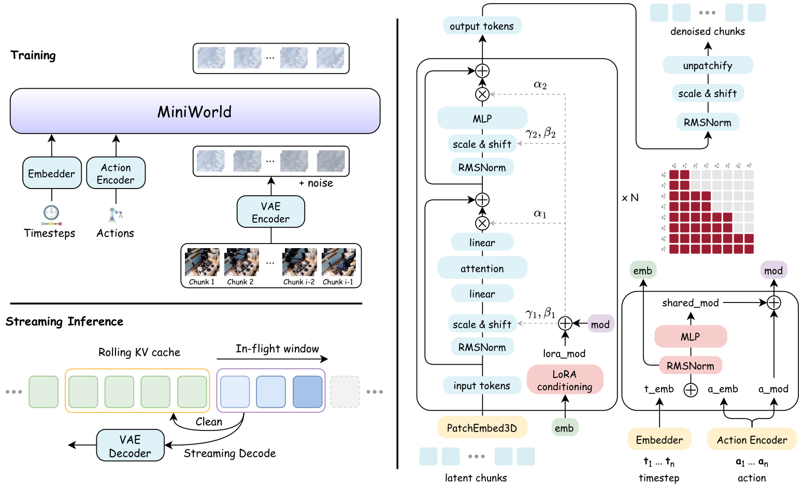

Action-conditioned rollout
MiniWorld block-causal Video DiT 接收观测与动作条件，输出 253 帧未来视频。
MiniWorld-1B将 MiniWorld 的动作条件生成拆解为可验证的机器人状态：冻结视频表征、因果时序预测，以及真实遥测与生成视频的帧级对照。
本页将世界模型、视频理解、机器人动作与结构化标注组织为一条可复现实验链路。
实验同时评估生成视频的视觉一致性，以及动作、运动与状态变化的保留程度。
实验以 MiniWorld-1B 的 DROID 动作条件 rollout 为输入，以冻结的 DINOv2 作为视觉表征，比较 single-frame 与 causal-GRU 两个事件预测基线。标签来自机器人状态遥测，并区分可观测状态与未经验证的物体接触。
MiniWorld block-causal Video DiT 接收观测与动作条件，输出 253 帧未来视频。
MiniWorld-1B用 DINOv2 CLS 与空间 patch 特征把每个采样帧转成 1,920 维视觉表征。
DINOv2 / frozen预测夹爪读数、末端运动、垂直方向与夹爪变化，并用真实遥测做弱监督。
causal GRU从动作条件、视频 latent 到结构化事件，中间结果均可回溯到对应 episode 与源帧。

选择一个 DROID episode，拖动时间轴查看真实视频、生成视频和机器人遥测是否保持一致。
评估同时覆盖生成质量、结构化状态预测与事件边界；指标来自可复现实验，并明确区分遥测状态与物体级真值。
mean PSNR / dB
MiniWorld-1B · reference rolloutfuture state macro-F1
causal GRU · 1.2 s horizonboundary F1 @ 0.8 s
one-to-one onset matching生成质量指标来自 MiniWorld rollout；状态预测与边界指标来自独立事件头评估。
| Evaluation track | Metric | Value | Interpretation |
|---|---|---|---|
| World model rollout | PSNR / SSIM | 23.38 dB / 0.876 | frame-wise visual fidelity |
| Future state prediction | macro-F1 | 0.451 | 1.20 s horizon · causal-GRU |
| Event boundary matching | F1 / MAE | 0.311 / 0.402 s | 0.8 s matching tolerance |
| Baseline gain | Δ macro-F1 | +0.047 | vs. single-frame 0.404 |
50 个已有 MiniWorld rollout，240 / 60 episode 训练与验证划分，episode 与主任务文本去重。全部特征、标签、模型和结果都保存在项目目录。
标签是 robot-state weak supervision：夹爪低值/高值、末端运动和垂直方向是遥测可观测状态。物体接触、抓取成功和任务完成仍需独立视觉标注。